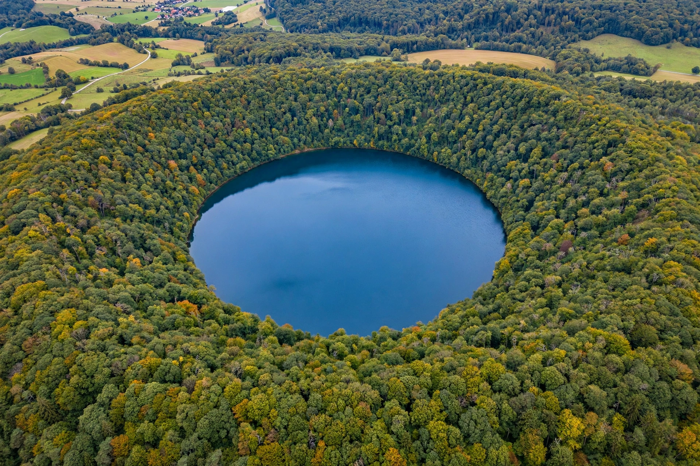

Maar
From Wikipedia, the free encyclopedia

A maar is a broad, low-relief volcanic crater caused by a phreatomagmatic eruption — an explosion that occurs when groundwater comes into contact with hot lava or magma. Maars range in size from a few tens of metres to about 3 km across and are often filled with water to form natural circular lakes, ringed by a low rim (tuff ring) of ejected country rock and volcanic debris.
Formation and examples
When rising magma flashes groundwater to steam, the resulting explosion excavates a crater that cuts down below the surrounding surface, above a funnel-shaped diatreme filled with breccia. The word is a local dialect term from the Eifel region of Germany, where maar lakes such as the Schalkenmehrener Maar and the Pulvermaar are classic examples. Other well-known maars include the maars of the Auckland volcanic field in New Zealand, the Laacher See in Germany, and crater lakes associated with kimberlite pipes; the Messel pit fossil site in Germany — famed for its Eocene fossils — occupies an ancient maar lake deposit.